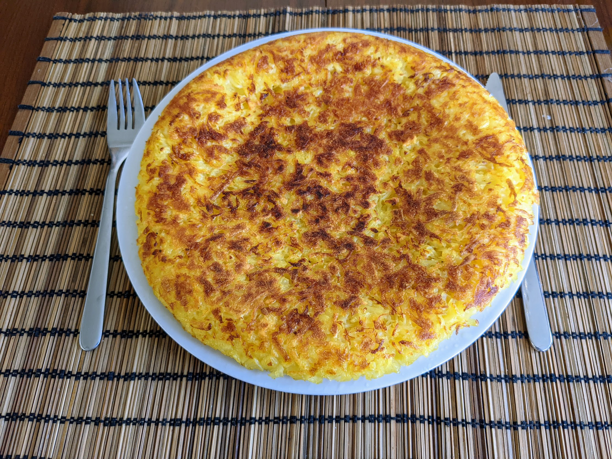

Rösti

Pour entre 3 et 5 personnes, en fonction de l'accompagnement :
- Entre 800g et 1kg de patates fermes à la cuisson
- De l'huile d'olive, ou du beurre, ou idéalement de la graisse d'oie
- Sel, poivre
- Entre un et trois jours à l'avance, faire cuire les patates avec leur peau une petite demi-heure, jusqu'à ce qu'on puisse les piquer à l'extérieur sans trop de difficulté, mais qu'elles soient quand même assez fermes au centre. Si elles ne sont plus fermes, alors elles sont trop cuites pour des rösti, et il vaut mieux en faire de la purée.
- Les conserver au frigo une fois refroidies. Le jour de la préparation, les éplucher et les râper (avec une râpe à assez gros trous). Saler, poivrer.
- Faire chauffer une quantité généreuse de matière grasse à feu moyen au fond d'une poële anti-adhésive assez grande. Quand c'est chaud, mettre les patates râpées dedans, égaliser à peu près, et tapoter sur les côtési pour que ça ait à peu près une forme de grosse galette.
- Quand ça commence à bien sentir la patate, typiquement après au moins une dizaine minutes de cuisson, graisser une assiette au moins aussi grande que la poêle, la mettre sur la poêle, et retourner le tout pour que la galette se retrouve sur l'assiette. Il faut que ça soit bien doré, surtout au centre ; si ce n'est pas le cas, remettre la galette dans la poêle de la même façon.
- Si c'est bien doré sur le dessus, faire glisser la galette sur l'assiette (d'où l'importance qu'elle soit graissée) pour la remettre dans la poêle et la faire cuire de l'autre côté, à peu près la même quantité de temps.
- Retourner à nouveau la galette à l'aide de l'assiette, déguster immédiatement.
Remarque : on peut manger les rösti avec juste un œuf sur le plat (auquel cas ça fait un plat de brunch pour 3 personnes environ), ou avec une saucisse ou des champignons en plus (pour un brunch nourrissant 4 personnes), ou en accompagnement d'une viande ou d'un plat en sauce (auquel cas, une galette de 1kg peut suffire pour 5).